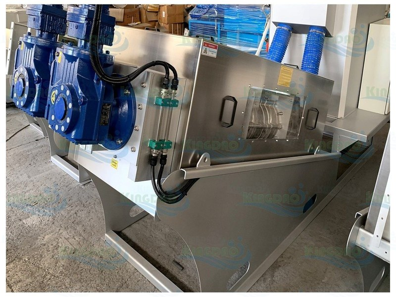
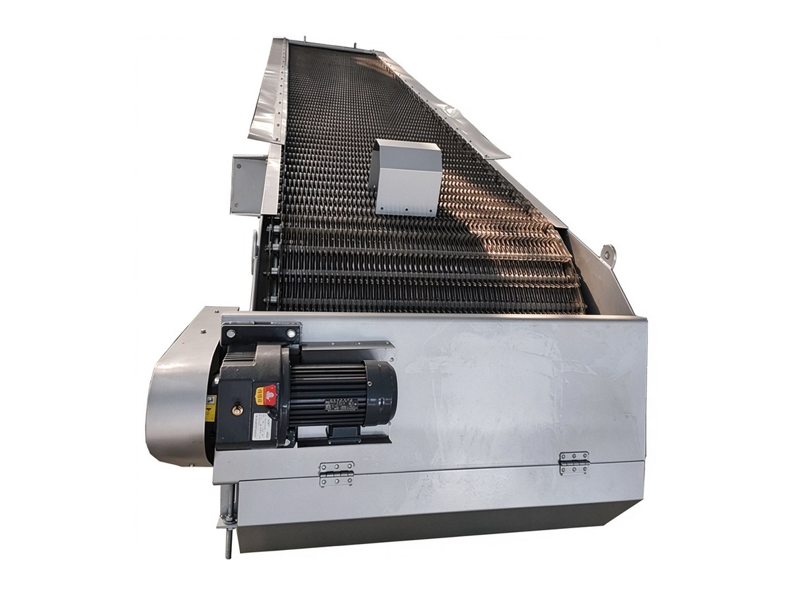
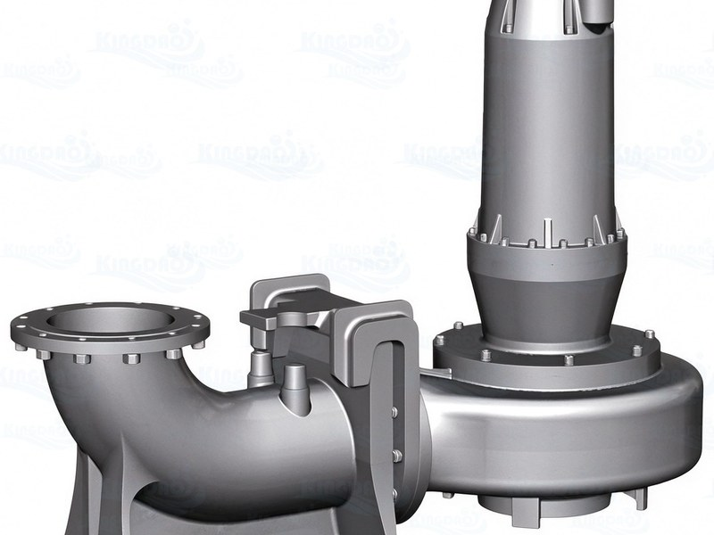

KINGDAO TECH is a water treatment equipment manufacturer and process design house in Yixing, Jiangsu, China. One technical partner from process route to start-up report — for EPC contractors, system integrators and industrial park owners, wherever the plant is being built.
In short: KINGDAO TECH is a water and wastewater equipment manufacturer and process design house in Yixing, Jiangsu, China: 17 equipment lines, 10 industries, plants from 250 to 100,000 m3/d. One technical partner from process route through equipment supply to start-up - for EPC contractors, engineering companies and industrial park owners. Motor voltage and frequency matched to the destination, 50 or 60 Hz, with English IOM manuals.
Process design and technical consulting, from 250 m³/d industrial packages to 50,000 m³/d municipal plants.
Domestic sewage for the zone. Effluent CODcr held below 80 mg/L. Designed to GB18918-2002 discharge standards.
Chrome, high salinity and high sulphide load. Combined A+B oxidation ditch process, with separate chrome and sulphide pre-treatment.
High colour, high salinity, PVA desizing and alkali weight-reduction water. 50% reuse, 70% achievable with the full train.
Our core lines are engineered in Yixing, Jiangsu — screw presses, crushing grilles, dosing systems, screens, mixers and aerators. Across the wider catalogue we supply equipment produced to our drawings and specification, so a project can be sourced from one technical partner instead of five suppliers. Motors and reducers from established international brands throughout; supplied ODM under your own brand or neutral.

Sludge dewatering. 14 selection models, 6–600 kg DS/h. Our core line.

Inline and open-channel macerators. 4 series, 75 models, DN50–DN400.

Curtain MBR, air-lift tube, cross-flow tubular, horizontal and vertical hollow fibre — five series.

PAC and polymer preparation, fully automatic or semi-automatic, with metering pumps.

Raked screening for coarse and fine duty; automatic, level-triggered cleaning.

Sewage, sludge and clean-water pumps with cutter options for fibrous load.
View all 17 equipment lines →We have designed plants for these industries — which is why we can talk about your effluent before we talk about a machine.
Our role is to add capacity behind yours: the equipment you do not build, the process design your team can lean on, and commissioning support at the far end.
Supplying from Yixing since 2005. You can visit, audit, and see the machine running before it ships.
10 industries, capacities from 250 to 50,000 m³/d. Mass balance, P&ID and GA drawings come from us, not from a third party.
Start-up, sludge seeding, optimisation and operator training until the Ministry of Environment test is passed.
Screw shafts, rings, bearings and drive units from the manufacturer that built the machine — not from a reseller.
Three things under one roof: process design for water and wastewater plants, supply of the equipment inside them, and commissioning support until the plant passes its effluent test. We are based in Yixing, Jiangsu, China.
Yes. Most of our work reaches projects through EPC contractors and engineering companies - we supply the equipment and provide the technical package behind their scope rather than bidding against them for the same contract.
Yes. Motors and electrical components are matched to the destination supply - 50 or 60 Hz, any voltage on request - and every unit ships with English IOM manuals and GA drawings.
Yes. Equipment can be supplied under the customer's own brand with our selection calculations, drawings and start-up support behind it, at competitive pricing with stable lead times.
Send the flow, the effluent analysis and the discharge standard. Selection for standard equipment is usually same or next working day; a full process route with mass balance takes longer because it is designed rather than looked up.
Send us your flow rate, the type of wastewater and the discharge standard. You will get a technical reply, not a sales brochure.